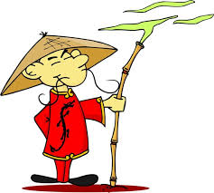
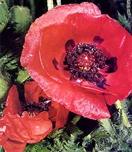

Os primeiros europeus a chegarem à Malásia foram os portugueses, no século XV; em seguida os holandeses, em 1641 e, finalmente, os britânicos, no século XIX (1824).
2. Leia as características a seguir e enumere-as corretamente:
( 1 ) Europa ( 2 ) Ásia ( 3 ) Oceania
é o maior continente do mundo: seus 43.608.000 km² abrangem 30% das terras emersas da Terra.
ao longo da história, foi sede de grandes civilizações que expandiram suas influências a diferentes regiões do mundo.
tem 8.923.000 km², dos quais 85% correspondem à Austrália, que por isso é chamada de ilha-continente.
3. A quais continentes pertencem as economias dos textos, abaixo?
a. “ O uso de processos altamente mecanizados e com tecnologia de ponta faz dessa economia uma das mais importantes do mundo.
Continente:
b. “ Destaca-se pela produção de ovinos e lã. Cultiva-se também o trigo, cana-de-açúcar, frutas, algodão e cevada. Seus recursos naturais são a bauxita, o zinco, o carvão mineral, o cobre, a prata e o ouro. “
Continente:
c. “ Em linhas gerais, O Extremo Oriente apresenta um bom nível de desenvolvimento . A região abrange uma das maiores potências econômicas do planeta (o Japão) e o país do crescimento mais acelerado do século XXI (a China).
Continente:
4. Leia os textos, abaixo:
“ Cerca de 60 milhões de pessoas deixaram a Europa no início do século XIX às primeiras décadas do século XX. Após a Segunda Guerra Mundial, a Europa tornou-se um importante destino para emigrantes...”
“ No continente asiático ocorre a maior concentração populacional do planeta. Diversas línguas e dialetos são falados; os mais difundidos são o mandarim, o híndi, o árabe, o japonês, idiomas eslavos (Rússia asiática) e o inglês. Muitas são também as religiões praticadas: o islamismo, o hinduísmo, o budismo, o xintoísmo (Japão) e o cristianismo.“
“ A Oceania é o menos populoso dos continentes, habitado por povos nativos com diferentes costumes, línguas, culturas em suas milhares de ilhas. A colonização europeia na região se deu do fim do século XVIII ao século XIX e promoveu o domínio da civilização ocidental sobre os nativos. “
Podemos dizer que:
a Europa é um continente de grandes migrações.
a Ásia possui uma população pequena, constituída de povos pobres.
a Oceania tem muitas ilhas, com povos nativos de diferentes costumes.
hoje, a Europa atrai grande número de pessoas que busca aperfeiçoamento, tecnologia, bons salários.
na Ásia, há uma diversidade de línguas e dialetos, como também, de religiões.
na Oceania, só existem nativos.
5. Nesta afirmação: “ Alguns acontecimentos bastante significativos marcaram os de 1960 e 1970 de maneira negativa, criando um clima de contestação. Ela introduz informações sobre a contracultura.
Que movimento foi esse?
6. Faça uma relação, colocando dentro da caixa de títulos, a letra da alternativa:
a. “ As políticas da companhia britânica desestabilizaram muitas sociedades tradicionais e empobreceram a maior parte dos indianos, que foram obrigados a importar tecidos ingleses e fornecer matéria- prima. Houve abusos de autoridade, crises de abastecimento e fome. “
b. “ A China tentou impedir , na primeira metade do século XIX, a venda do ópio, produzido e comercializado pela Companhia Inglesa das Índias Orientais. “
c. O vício destruiu indivíduos e famílias, e muitos camponeses deixaram de cultivar alimentos para plantar papoulas... A China se rendeu e assinou, em agosto de 1842, um tratado que estabelecia a abertura de alguns portos chineses ao comércio com a Grã-Bretanha e transferiu Hong Kong ao domínio britânico.
Revolta dos Sipaios – 1857 e 1858

Tratado de Nanjing – 1842

Guerra do Ópio - 1839 a 1842
7. Leia o trecho abaixo:
“ Com o fim da União Soviética, os Estados Unidos se converteram na única superpotência do planeta. O poderio econômico, militar, cultural e científico-tecnológico dos Estados Unidos justificava a supremacia do país e o poder de decidir, quase unilateralmente, questões políticas e econômicas do restante do mundo. “
Complete, com suas palavras:
a. Uma superpotência
pode
b. Os Estados Unidos conseguiram
um
c. Todos os outros países ficam subordinados ao poder americano
porque